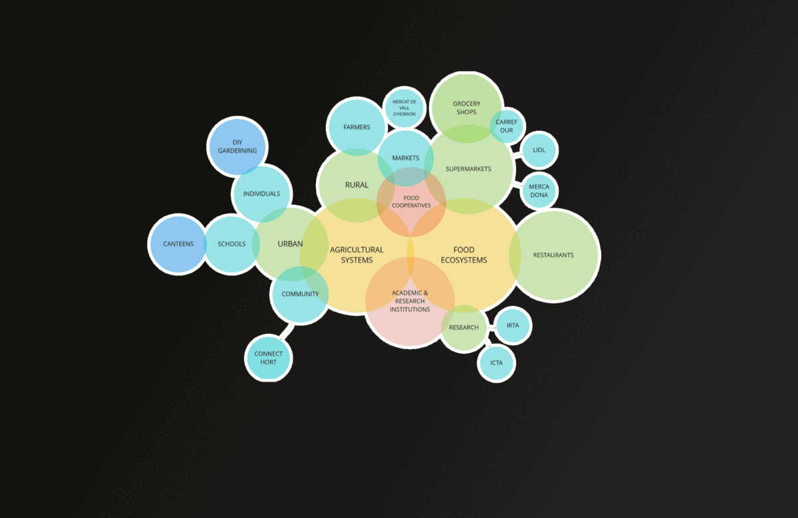

Community Engagement
This course followed after two weeks of 'Tech Beyond The Myth'
and was led by Mercè Rua and Merkel Cormenzana from Holon. The week started with design theory and examples and strategies from Holon's field of work.
Which got me to order a few electronic parts with which I will try to experiment a bit more.
Design Intervention: 'Conversaciones Maduras'
Goal
Creating personal awareness among consumers about the flaws in our current food system.
Process
Our first progressions initiated as a gigamap on the Miro board. Collectively we agreed on doing the intervention in the form of a workshop.
Instead of shocking, confronting or oppressing people with our topic we wanted to activate people.
Spreading the problem out and handing them tools and tips to tackle it on a personal scale.
Derived of our Miro-board we selected and approached several individual parties that would be able and willing to
realise a workshop.

On the outskirts of Barcelona, just north of El Prat de Llobregat, a municipally-owned building called Masía Can Comas is located. As orientation on local agricultural/food-related problematique
I met there with Mrs. Perxacs, recently started as Environmental Manager at Masía Can Comas.
She explained me about the activities that take place on their site and the different people and interests involved in this.
Shortly after my visit one of my workgroup colleagues got a greenlight for organizing a workshop in Hospitalet which we all regarded as a well-accessible opportunity to reach our 1st Person Perspective.
**WORKSHOP PREPERATIONS
*MERCABARNA
*HOSPITALET
*REFLECTION
CONTINUATION
Results
Links: Holon,
Masía Can Comas
By Ruben de Haan on November 28th, 2021
Edited by Ruben de Haan on December 10th, 2021